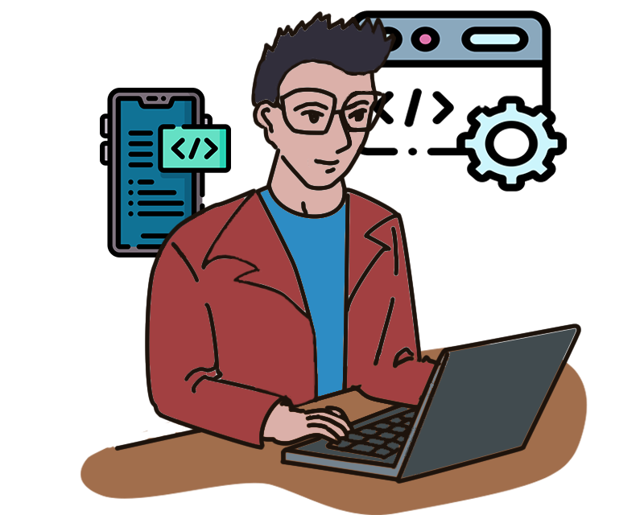
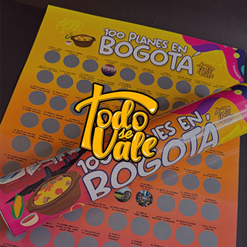

Ajustes
Hola, Soy
Juan David Franco
Desarrollador web y diseñador de interfaces

disponible para trabajar
Acerca de mí

Programo y diseño páginas estáticas y aplicaciones web
Software Developer y Diseñador UX/UI. Cuento con experiencia en el desarrollo de aplicaciones web. Domino tecnologías Frontend como HTML, CSS, JavaScript y React.js; y tecnologías Backend como Node.js, Express.js y MongoDB.
Cuento con conocimiento en diseño UX/UI, usando tecnologías cómo metodología agile, UX Research (Entrevistas, Encuestas, User Persona), creación de sistemas de diseño, prototipado con Figma, Adobe Photoshop e Illustrator.
Me enfoco en la mejora continua y en la implementación de soluciones escalables. Busco unir mis conocimientos en Programación y Diseño de Producto para crear aplicaciones con los más eficientes estándares de rendimiento, accesibilidad y usabilidad
Proyectos



Stack tecnológico
Puedo ayudarte con
Desarrollo Web Fullstack
Desarrollo de aplicaciones web, landing page, y páginas estáticas responsivas, funcionales y escalables
Diseño UX/UI
Diseño de interfaces, creación de sistemas de diseño, investigación de usuario, arquitectura de la información, prototipado